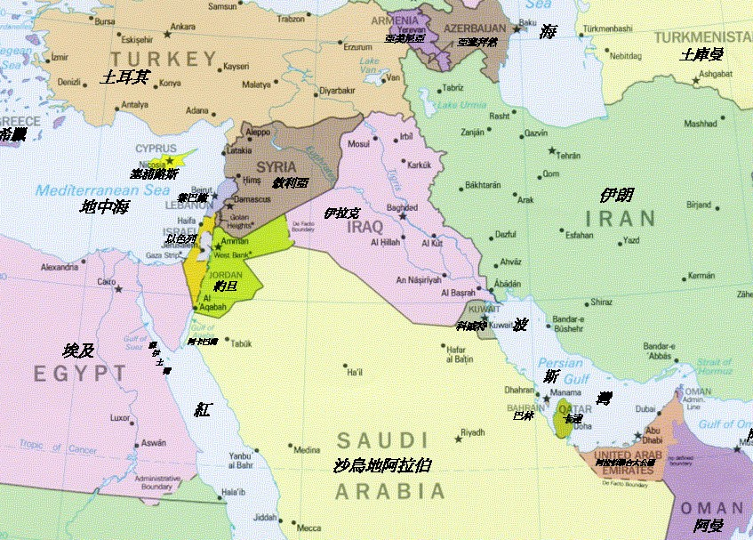

Copyright 版權所有©2026 CHSU 巴勒斯坦問題資訊站
| 時間 | 日期 | 摘要 |
|---|---|---|
| c. B.C.2000 | (龍山文化)猶太人始祖亞伯拉罕 立約 選民 允諾之地 由吾珥遷迦南 | |
| c. B.C.1225 | (商) 摩西 出埃及 十誡 回迦南 | |
| c. B.C.1040 | (周) 掃羅建國 | |
| c. B.C.1012 | (周) 大衛統一 建都耶路撒冷 | |
| c. B.C. 960 | (周) 所羅門 建聖殿（一）﹕民族與精神中心 | |
| c. B.C. 935 | (周) 分裂為猶太及以色列兩國 | |
| c. B.C. 722-20 | (春秋) 亞述滅北朝以色列 | |
| c. B.C. 586 | (春秋) 巴比倫滅南朝猶大毀聖殿，猶太人流放巴比倫 | |
| c. B.C. 539 | (春秋) 波斯滅巴比倫 | |
| c. B.C. 540 | (春秋) 大流士准猶太人返鄉 重建聖殿（二） 538-515 | |
| B.C.332 | 亞歷山大大帝征服耶路薩冷 | |
| B.C. 63 | (西漢) 羅馬大將龐貝(Pompey)佔巴勒斯坦 | |
| A.D. 66 | (東漢) 猶太人反 羅馬平亂 | |
| 70 | 羅馬再毀聖殿殺60萬人，餘流徙(Diaspora) | |
| 73 | 猶太人最後據點馬薩達(Masada)陷落 | |
| 132-5 | (東漢) 猶太人再反 58萬人死 羅馬只准猶太人一年一次回耶路撒冷 哭牆 | |
| 313 | 基督教成為羅馬帝國國教 | |
| 395-636 | 拜占廷統治巴勒斯坦 | |
| 636 | 阿拉伯統治開始 | |
| 1072 | 塞爾柱土耳其征服巴勒斯坦 | |
| 1099 | 第一次十字軍佔領耶路撒冷，屠殺猶太人 | |
| 1187 | 撒拉丁從十字軍多回耶路撒冷 | |
| 1215 | 第四次拉特朗公會議，排斥猶太人--必須配戴標記。 | |
| 1290 | 猶太人被逐出英國 | |
| 1291 | 馬穆魯克王朝攻陷阿卡，逐出巴勒斯坦基督教勢力。 | |
| 1394 | 猶太人在法國被驅逐出境 | |
| 1492 | 猶太人被逐出西班牙 | |
| 1516 | 鄂圖曼土耳其征服巴勒斯坦 | |
| 1517 | 馬丁路德宗教改革開始 | |
| 1655 | 英國允許猶太人重返 | |
| 1700～ | 巴勒斯坦的猶太人口僅約 5,000 人，佔當時總人口的 2% | |
| 1791 | 法國立法予猶太人公民權，但拿破崙下台後被取消。 | |
| 1799 | 拿破侖爭埃及，攻巴勒斯坦阿卡（Acre）未成。 | |
| 1854 | 李西蒲(de Lesseps)獲准修築蘇伊士運河 | |
| 1862 | 摩西．赫斯出版《羅馬與耶路撒冷：最後的民族問題》。提出在約旦河兩岸建國主張。 | |
| 1869 | 蘇伊士運河啟用 | |
| 1870 | 猶太全民聯盟在雅法東南方創辦了著名的農業學校「以色列的希望」（Mikveh Israel） | |
| 1876 | 英國買下蘇伊士運河 | |
| 1878 | 猶太農業定居點「希望之門」（Petakh Tikvah）創立（隨後不久即宣告失敗） | |
| 1880 | 巴勒斯坦的猶太人口在約 47 萬總人口中增加至 25,000 人 | |
| 1881 | 沙皇亞歷山大二世於1881年3月13日被刺殺，0427開始反猶迫害，直至1884年。促使流散猶太人建立跨國合作與移民潮 | |
| 1882 | 英佔埃及 第一批猶太復國主義者Zionist自俄羅斯來巴勒斯坦定居 首次回鄉(Aliya)開始。萊昂·平斯克出版《自我解放》。 | |
| 1894 | 法國猶太裔軍官德雷福斯被判叛國，1898年一月作家左拉投書〈我控訴〉。 | |
| 1896 | 赫茨爾(Theodor Herzl)出版《猶太國》 | |
| 1897 | 第一屆猶太復國主義大會由赫宙在瑞士巴賽爾召開 預言50年建國 「猶太勞工總聯盟」（Bund）在立陶宛維爾紐斯成立 | |
| 1901 | 猶太民族基金成立。 | |
| 1904 | 赫茨爾去世 | |
| 1905 | 第七屆猶太復國主義大會否決英國提供的烏干達為復國所在地 | |
| 1908 | 巴勒斯坦辦事處（The Palestine Office）成立，1929年，此機構轉型為猶太總署〔The Jewish Agency〕 | |
| 1909 | 第一個集體農莊(kibbutz)成立，第一個全猶太人現代都市特拉維夫在雅法郊區建立；青年衛士團(Hashomer)成立，童軍組織。 | |
| 1914 | 第一次世界大戰。魏茲曼於12月會見英國外交大臣貝爾福 | |
| 1915 | 1024 | 英國承諾阿拉伯人（Hussein-McMahon Correspondence），若反抗鄂圖曼土耳其統治，戰後協助統一獨立。 |
| 1916 | 英 法（賽克斯─皮科協定）劃分中東勢力範圍。阿拉伯人起義。 | |
| 1917 | 1102 | 貝爾福(Balfour)宣言。英國結束土耳其在巴勒斯坦的統治。 |
| 1107 | 俄國爆發革命，猶太人正式獲得解放。 | |
| 1920 | 0425 | 英國獲委任統治巴勒斯坦 |
| 猶太人55,000在巴勒斯坦，猶太勞工聯盟成立，哈加納(Haganah)猶太人防禦組織成立﹔猶太人成立民族會議National Council(Vaad Leumi)處理猶太人事務 | ||
| 1922 | 0722 | 「國際聯盟」正式將巴勒斯坦交給英國，阿拉伯人與猶太人65:8.4萬 |
| 成立「猶太總署」(Jewish Agency)代表猶太人團體。 阿拉伯人暴動 | ||
| 1923 | 英白皮書。國際聯盟首先正式授權英國託管巴勒斯坦和外約旦。 | |
| 1925 | 希伯來(Hebrew)大學在耶路撒冷成立 英國Peel Commission 建議分治 | |
| 1929 | 巴勒斯坦「八月暴動」，133名猶太人遇害（此事件促使巴勒斯坦猶太人凝聚成單一的共同體） | |
| 1930 | 英《帕斯菲爾德白皮書》限制猶太移民與購地 | |
| 1931 | Etzel（伊爾貢Irgun）猶太地下恐怖組織成立。 | |
| 1933 | 希特勒上台 | |
| 1935 | 本-古里昂控制猶太總署執委會 | |
| 1936 | 「阿拉伯大起義」，持續至1939年。 | |
| 1937 | 英分治計畫(Peel Commission)，此時猶太人45萬佔30%。 | |
| 1939 | 英白皮書限制猶太移民 人口 土地 定十年內建巴勒斯坦國 | |
| 二次世界大戰 開始-1945 歐洲猶太人遭大屠殺(Holocaust) | ||
| 1940 | 「萊希組織」（Lehi，亦稱斯特恩幫派〔Stern Gang〕自伊爾貢脫離。 | |
| 村里檔案計畫（The Village Files Project，哈加納主導的情報計畫，為因應作戰需要，其文件詳細記載了巴勒斯坦英國託管地的所有阿拉伯村莊資訊）開始實施。 | ||
| 1942 | 紐約召開緊急錫安主義會議，通過《比爾特莫綱領》，正式要求在整個巴勒斯坦建立主權猶太國家 | |
| 1944 | 英國軍隊成立猶太人旅。比金（Menachem Begin）接任地下武裝組織「伊爾貢」（Irgun）的領袖 | |
| 1945 | ||
| 0322 | 「阿拉伯聯盟(Arab League)」在開羅成立。成員﹕埃及﹑伊拉克﹑黎巴嫩﹑敘利亞﹑沙烏地阿拉伯及外約旦。 | |
| 0816 | 美國總統杜魯門贊成十萬猶太移民進入巴勒斯坦 | |
| 1103 | 杜魯門在華府﹑英國外相貝文(Ernest Bevin)在倫敦宣布同意成立委員會檢討歐洲猶太人問題及巴勒斯坦﹔貝文稱巴勒斯坦將成為聯合國的託管地，最終則成為自治政府。 | |
| 1122 | 巴勒斯坦阿拉人領袖組成十二人「高級委員會」(Higher Committee)，在「阿拉伯聯盟」中表達他們的意見。 | |
| 1212 | 美國參議院外交委員會通過決議，敦促美國政府協助使巴勒斯坦對猶太人開放以及建立一「民主的共同體(democratic commonwealth)」，參院於1217眾院於1219分別通過。 | |
| 1946 | ||
| 0107 | 「英美調查委員會(Anglo-American Committee of Inquiry)」在華府展開工作 | |
| 0130 | 英國宣布在委員會調查期間允許每月一千五百名猶太人進入巴勒斯坦（這是1939年英國白皮書所允許的七萬五千人之外的數額）。 | |
| 0202 | 巴勒斯坦阿拉伯人罷工，阿拉伯「高級委員會」抗議英國決定讓額外的猶太人進入。 | |
| 0302 | 「阿拉伯聯盟」發言人告訴「英美委員會」，聯盟反對在巴勒斯坦成立猶太人國家，要求成立阿拉伯人國家。 | |
| 0322 | 英國與外約旦簽約結束託管。 | |
| 0430 | 「英美委員會」發表報告，建議立即允許十萬猶太人進入巴勒斯坦，以及在聯合國成立託管之前繼續由英國託管。 | |
| 0502 | 「阿拉伯聯盟」抗議前述報告，「阿拉伯高級委員會」警告英國，若採納前述建議則「民族鬥爭」將再起。 | |
| 0725 | 「英美委員會」在倫敦建議，三分巴勒斯坦﹕猶太﹑阿拉伯﹑英國。 | |
| 0807 | 英國宣布計劃防止超額（每月一千五百名）的猶太人進入巴勒斯坦，並將此種移民船轉至塞浦路斯(Cyprus)。 | |
| 0910 | 針對巴勒斯坦的會議在倫敦開幕，阿拉伯人參加猶太人杯葛。 | |
| 0920 | 成立委員會研究阿拉伯人對巴勒斯坦的建議，猶太人同議停止杯葛倫敦會議。 | |
| 1004 | 杜魯門公開呼籲英國，「立即」允許「大量移民」，並表示支持猶太復國主義者的計劃，在巴勒斯坦部分地區成立「可生存的猶太人國家」﹔英國政府表示遺憾，因該呼籲可能危害一項解決方案。 | |
| 1947 | ||
| 0127 | 倫敦會議再度展開，有阿拉伯代表及猶太復國主義者觀察員。 | |
| 0214 | 倫敦會議未達成協議，英國提議巴勒斯坦問題交給聯合國。 | |
| 0428 | 聯合國大會針對巴勒斯坦問題召開特別會議。大會的「政治與安全委員會」於0513投票成立調查委員會。 | |
| 0514 | 蘇聯駐聯合國代表葛羅米科(Andrei A. Gromyko)建議，若阿拉伯人和猶太人不同意成立一個國家(Arab-Jewish state)，那就將巴勒斯坦分成兩個獨立國家。 | |
| 0616 | 「聯合國針對巴勒斯坦特別委員會(U.N. Special Committee On Palestine:U.N.S.C.O.P.)展開調查聽證。 | |
| 0831 | U.N.S.C.O.P. 提出多數之建議，於1949,0901,在巴勒斯坦成立個別的阿拉伯及猶太國家，耶路撒冷與其鄰近區域則由聯合國永久託管﹔少數之建議是，在三年內成立聯邦的阿拉伯猶太國。 | |
| 0901 | 猶太復國主義者領袖同意U.N.S.C.O.P.的多數意見，「阿拉伯高級委員會」拒絕並威脅軍事行動。 | |
| 0920 | 英國內閣宣布接受U.N.S.C.O.P.多數意見。 | |
| 1009 | 「阿拉伯聯盟」議會建議會員國軍隊部署巴勒斯坦邊境，準備英軍撤退時行動。 | |
| 1011 | 美國駐聯合國代表贊成巴勒斯坦分治，1013蘇聯贊成。 | |
| 1129 | 聯合國大會33:13﹑10票棄權，通過分治計劃於1948,1001生效。阿拉伯會員抨擊後退席。 | |
| 1205 | 美國對於因聯合國決議引起之暴動，對中東實施武器禁運。 | |
| 1208 | 「阿拉伯聯盟」號召協助巴勒斯坦阿拉伯人，反抗任何分治巴勒斯坦的行動。 | |
| 1948 | ||
| 0319 | 美國建議「安理會」暫停分治計劃，並敦促聯合國大會召開特別會議重新研究該問題。 | |
| 0325 | 杜魯門呼籲猶太人與阿拉伯人停火。 | |
| 0401 | 「安理會」採納美國意見及停火要求。 | |
| 0513 | 「阿拉伯聯盟」宣稱，會員國與巴勒斯坦猶太人之間處於戰爭狀態。 | |
| 0514 1606 | 以色列國公佈，午夜時成立。英國於午夜撤出。 | |
| 0515 0011 | 華府時間05141811，杜魯門在該國成立十一分鐘後承認以色列﹔五個「阿拉伯聯盟」國家﹕外約旦﹑埃及﹑伊拉克﹑敘利亞﹑黎巴嫩入侵以色列。埃及飛機轟炸特拉維夫(Tel Aviv)。 | |
| 0517 | 蘇聯承認以色列。 | |
| 0525 | 以色列總統魏玆曼(Chaim Weizmann)訪問杜魯門，呼籲九千萬至一億元貸款，武裝以色列及協助移民。 | |
| 0527 | 杜魯門稱貸款應向世界銀行及美國進出口銀行申請。 | |
| 0611 | 為期四週的阿拉伯以色列停火生效。 | |
| 0630 | 英軍完全撤出巴勒斯坦。 | |
| 0708 | 聯合國調停代表伯那多德伯爵(Count Folke Bernadotte)報告，稱阿拉伯人拒絕延展停火。 | |
| 0718 | 恢復停火。 | |
| 0917 | 伯那多德遭暗殺，據稱係猶太恐怖分子所為﹔邦曲博士(Dr. Ralph J. Bunche)獲提名繼任。 | |
| 0920 | 伯那多德對巴勒斯坦的最後建議公佈，包括承認以色列﹔埃及於迦薩成立「全巴勒斯坦阿拉伯人民政府」，外約旦及伊拉克反對，因為那等於承認分治。 | |
| 1022 | 以色列與埃及同意再次停火，服從聯合國安理會1019的命令。 | |
| 1116 | 「安理會」通過決議，要求停戰。 | |
| 1201 | 外約旦併吞「西岸」。 | |
| 1211 | 聯合國大會成立新的「巴勒斯坦調解委員會(Palestine Conciliation Commission)」。大會通過194號決議︰允許難民返鄉。 | |
| 1230 | 英國警告以色列撤出埃及領土，否則將依據英埃條約協助埃及。 | |
| 1949 | ||
| 0106 | 以色列與埃及宣布，於0107開始全面停火，0110以軍撤出埃及。 | |
| 0113 | 聯合國調停代表邦曲與以﹑埃代表會談，談判停戰。 | |
| 0124 | 埃及與以色列無限期延展停火。 | |
| 0125 | 以色列首次選舉，總理本古里昂的政黨贏得國會(Knesset)最多數席次。 | |
| 0131 | 美國對以色列及外約旦擴展完全的外交承認，法國於0124英國於0129分別承認以色列。 | |
| 0201 | 以色列結束對耶路撒冷的軍事統治，正式將該城併入為其一部。 | |
| 0224 | 以埃達成停戰協定 | |
| 0307 | 埃及與英屬「蘇伊士運河公司」在蘇伊士城簽訂協議，要求該公司的工作80-90%由埃及人擔任，以及埃及要獲利的7%。 | |
| 0311 | 外約旦與以色列簽訂「完全且持久」的停火協定。 | |
| 0321 | 「巴勒斯坦調解委員會」在黎巴嫩貝魯特首次集會，以解決阿拉伯難民問題。 | |
| 0405 | 以色列與敘利亞停戰談判觸礁，因以色列拒絕與敘利亞新軍政府代表談判，該政府於0330政變後成立。 | |
| 0420 | 以色列雖同意將耶路撒冷的聖地(Holy Places)國際化，但再次拒絕該城整個國際化。 | |
| 0426 | 外約旦宣布，該國正式名稱為約旦，或哈須麥約旦王國(Hashemite Jordan Kingdom)。 | |
| 0426 | 敘利亞回應約旦0407將發展「大」約旦的聲明，關閉與約旦的邊界，並警告反對併吞其領土的企圖。 | |
| 0427 | 洛桑會議 | |
| 0428 | 以色列反對阿拉伯難民回鄉的建議。 | |
| 0511 | 以色列獲准加入聯合國，投票時，英國棄權，結果是，37:12。 | |
| 0720 | 敘利亞與以色列簽訂停戰協定，在爭議地區成立非武裝區。 | |
| 0727 | 聯合國中東調停代表邦曲博士報告，巴勒斯坦衝突的軍事階段結束。 | |
| 0913 | 「巴勒斯坦調解委員會」提議﹕耶路撒冷由聯合國控制，以色列或阿拉伯國家皆不得在該城設置政府機構，除了各該國民所住區的地方行政，也不得控制該城，聖地則由國際永久監管。以色列於1115拒絕此議。 | |
| 1028 | 以色列威脅退出「巴勒斯坦調解委員會」，除非阿拉伯國家同意直接談判 | |
| 1209 | 聯合國大會通過決議，將耶路撒冷交由「託管委員會」管理。英﹑美﹑以三國反對。 | |
| 1216 | 本古里昂總理宣布，耶路撒冷將於1950,0101,成為該國首都。 | |
| 1950 | ||
| 0115 | 美國國務卿艾奇遜(Dean Acheson)為英國武器輸往伊拉克﹑約旦﹑埃及辯護，因為西方必須與阿拉伯國家友善。 | |
| 0309 | 土耳其（第一個回教國家）承認以色列。 | |
| 0315 | 伊朗承認以色列。 | |
| 0324 | 約旦退出與以色列的反侵略條約談判。 | |
| 0401 | 「阿拉伯聯盟」會議決議，驅逐任何與以色列個別談和的會員。 | |
| 0404 | 聯合國「託管委員會」通過耶路撒冷國際化。 | |
| 0413 | 以色列拒絕「阿拉伯聯盟」和平談判條件，其中包括回復1947年聯合國分治的邊界。 | |
| 0420 | 「阿拉伯聯盟」祕書譴責英美的中東政策，並鼓勵阿拉伯國家轉向蘇聯。 | |
| 0424 | 約旦正式併吞西岸地區，包括耶路撒冷舊城。 | |
| 0427 | 英國承認約旦所為，對以色列也由事實承認轉為完全的外交承認。 | |
| 0525 | 杜魯門透露與英法達成協議，對中東的軍售應該對等，購買者若承諾不恢復巴勒斯坦的戰爭。 | |
| 0602 | 以色列與約旦正式通知聯合國，拒絕「託管委員會」將耶路撒冷國際化的計畫。 | |
| 0614 | 「託管委員會」承認五個月來的企圖失敗。 | |
| 0617 | 「阿拉伯聯盟」五個成員﹕埃及﹑沙烏地阿拉伯﹑敘利亞﹑黎巴嫩﹑葉門，簽訂集體安全條約。 | |
| 0621 | 「阿拉伯聯盟」保証不使用外購軍火侵略他國。 | |
| 1121 | 為回應埃及要求英國立即撤出蘇伊士運河區和英埃屬地蘇丹，英國外相貝文在國會答覆時稱﹕英軍將留下，直到1936年英埃條約經「雙方同意」更動之後。 | |
| 1951 | ||
| 0720 | 約旦國王阿布都拉遇刺。 | |
| 0901 | 聯合國安理會要求埃及終止三年來禁止以色列貨船通行蘇伊士運河，埃及於0902拒絕，直到以色列遵守聯合國先前的決議。 | |
| 0913 | 聯合國「巴勒斯坦調解會議」在巴黎召開，以色列與阿拉伯代表參加。 | |
| 0921 | 以色列聲稱﹕願意與四個阿拉柏鄰國簽訂互不侵犯條約，但警告阿拉伯人若不與以色列代表面對面，則停止談判﹔以色列願意補償阿拉伯難民，並協助他們在阿拉伯國家定居，但不願意難民回到以色列。 | |
| 1008 | 埃及宣布計劃驅逐駐紮在蘇伊士運河區的英軍，並完全掌控蘇丹。 | |
| 1009 | 英國宣布不會退出。 | |
| 1016 | 蘇伊士運河區緊張，埃及宣布緊急狀況三天，國會通過法魯克國王(Farouk) 頭銜改為﹕埃及與蘇丹國王，埃及憲法適用於蘇丹。 | |
| 1027 | 埃及正式通知英國，1936年同盟條約與1889年共管蘇丹協定皆失效。蘇丹國會拒絕受埃及王室的統治。 | |
| 1102 | 英國繼續增強駐防蘇伊士運河區之英軍。 | |
| 1105 | 英軍撤出前，埃及拒絕討論蘇伊士運河爭議。 | |
| 1115 | 英國建議，蘇丹自治一兩年後，再由選民決定是否與埃及合併。 | |
| 1118 | 英埃衝突。 | |
| 1121 | 聯合國終止調停。 | |
| 1213 | 埃及召回駐英大使，以抗議英國「侵略」。 | |
| 1952 | ||
| 0118 | 英埃衝突。 | |
| 0126 | 埃及實施戒嚴。 | |
| 0726 | 埃及法魯克國王退位。 | |
| 0907 | 納奎布(Mohammed Naguib)將軍成為埃及領袖。 | |
| 1954 | ||
| 0417 | 納瑟上校取代納奎布成為埃及總理。 | |
| 0611 | 埃及宣布與沙烏地阿拉伯結為軍事同盟。 | |
| 0727 | 埃及與英國簽約結束蘇伊士運河爭議，英軍在二十個月內撤出。 | |
| 1102 | 約旦請英法美阻止以色列將約旦河改道。 | |
| 1955 | ||
| 0224 | 伊拉克加入巴格達公約。 | |
| 0927 | 埃及捷克軍火交易宣佈 | |
| 0928 | 美國助理國務卿艾倫(Allen)赴開羅與納瑟討論埃及將以棉花交換蘇聯軍火 | |
| 1012 | 美國與以色列消息透露，蘇聯願意出售軍火給以﹑埃。1011以色列要求美國平衡蘇聯對埃及的軍火輸出。 | |
| 1020 | 埃及與敘利亞簽訂共同防禦條約，以色列因此要求與美國簽訂安全條約。以色列並引證埃及近來自捷克採購的軍火。 | |
| 1031 | 以色列呼籲蘇聯勿出售軍火給阿拉伯國家，以免促成中東新的戰爭。 | |
| 1114 | 約旦政府辭職抗議英國加入「巴格達公約」的壓力，胡笙(Hussein)國王解散國會1120，因抗議暴動繼起。 | |
| 1226 | 埃及﹑沙烏地阿拉伯﹑敘利亞聯合軍力，由埃及戰爭部長統一指揮。 | |
| 1956 | ||
| 0113 | 黎巴嫩與敘利亞簽訂雙邊防禦條約。 | |
| 0119 | 蘇丹加入「阿拉伯聯盟」，其他成員為埃及﹑伊拉克﹑約旦﹑黎巴嫩﹑沙烏地阿拉伯﹑利比亞﹑敘利亞及葉門。 | |
| 0130 | 以色列敦促美﹑英允許購買軍火。 | |
| 0206 | 美國國務卿杜勒斯(Dulles)不排除「出售軍火給以色列的可能」，建議以色列寄望聯合國與1950年「英﹑美﹑法三強協定」。 | |
| 0214 | 以色列同意暫停「約旦河谷計劃」工作，讓美國爭取阿拉伯國家合作加入該計畫。 | |
| 0216 | 以色列對美國派遣戰車至沙烏地阿拉伯表示「遺憾」。 | |
| 0303 | 約旦同意英國在該國可擁有基地。 | |
| 0310 | 約旦突擊以色列，結束兩年來邊界的安寧。 | |
| 0312 | 埃及﹑沙烏地阿拉伯﹑敘利亞同意共同防禦以色列。 | |
| 0410 | 葉門加入。 | |
| 0421 | 埃及﹑沙烏地阿拉伯﹑葉門建立五年期聯合軍事司令部，由埃及領導。 | |
| 0506 | 約旦﹑埃及宣布計劃統一軍隊。 | |
| 0509 | 美國國務卿杜勒斯聲明，美國為避免中東的對抗將克制對以色列的軍售。 | |
| 0512 | 美國證實對沙烏地阿拉伯的軍售，十二架噴射機由法國運抵以色列，美國默許。 | |
| 0516 | 英國宣布六個蘇伊士運河基地由埃及控制。 | |
| 0521 | 黎巴嫩與約旦同意協同軍事計劃。 | |
| 0531 | 約旦與敘利亞簽訂軍事協定。 | |
| 0613 | 英國將蘇伊士運河防禦責任交給埃及﹔0618宣布結束對運河七十四年的佔領。 | |
| 0624 | 納瑟當選埃及第一任總統。 | |
| 0720 | 美國拒絕貸款埃及建設阿斯旺水壩(Aswan Dam)，英國跟進。 | |
| 0727 | 納瑟將蘇伊士運河國有化，以運河收入建設水壩。 | |
| 0728 | 英國凍結埃及與蘇伊士運河公司在英財產。 | |
| 0816 | 二十二國在倫敦討論蘇伊士運河危機。 | |
| 0911 | 初步協商失敗，英﹑法同意以經濟壓力迫埃及接受運河由國際管理﹔美國反對。 | |
| 0914 | 埃及完全控制運河。 | |
| 0930 | 黎巴嫩呼籲，敘利亞﹑埃及﹑約旦與黎巴嫩協商動員部隊報復以色列的襲擊。 | |
| 1008 | 埃及與蘇聯反對由國際監管運河的意見。 | |
| 1012 | 英國警告以色列，以色列與約旦的衝突中，英國將履行1948年與約旦的共同防禦條約。 | |
| 1025 | 埃及﹑敘利亞和約旦簽約 ，由埃及將領統一指揮它們的部隊。 | |
| 1029 1700 | 以軍空降西奈半島的米特拉隘道。 | |
| 1030 | 以﹑埃爆發空戰，英﹑法致以﹑埃最後通牒，要求雙方部隊撤出運河兩岸十英哩，納瑟拒絕接受，英﹑法開始轟炸埃及。 | |
| 1031 | 以色列稱，若埃及接受通牒即願意接受。英﹑法部隊集結於塞浦路斯。 | |
| 1101 | 埃及與英﹑法斷交，並沒收其財產﹔約旦也與法國斷交，並通知英國，不再允許英國使用地面基地以攻擊埃及。 | |
| 1102 | 迦薩走廊被以軍佔領。 | |
| 1103 | 英﹑法拒絕聯合國1101的停火呼籲。 | |
| 1105 | 蘇聯警告準備動武「包括使用飛彈」，以恢復中東和平，並呼籲美國共同行動對付「侵略者」，美國拒絕。 | |
| 1106 | 以色列結束西奈作戰，準備停火﹔同時英﹑法空降奪取埃及的塞德港 | |
| 1107 | 聯合國大會要求英﹑法﹑以撤出埃及。艾森豪總統以私函致以色列總理本古里昂，對以色列拒絕撤出表示「關切」，那將「有損兩國友好合作」。 | |
| 1110 | 蘇聯要求英﹑法﹑以撤出埃及，否則將允許自願軍加入埃及部隊﹔1114美國稱反對蘇聯的干預。 | |
| 1121 | 英﹑法﹑以開始撤軍，據報導艾森豪以私函敦促英﹑法完全撤出。 | |
| 1130 | 美國開始緊急供應歐洲石油。 | |
| 1222 | 英﹑法完全撤出埃及。 | |
| 1224 | 埃及對英﹑法﹑以要求賠償。 | |
| 1957 | ||
| 0104 | 蘇伊士運河對中型船隻開放。 | |
| 0123 | 以色列提撤軍先決條件﹕埃及保証迦薩走廊和夏姆西克不得用於敵對行動 | |
| 0301 | 以色列同意撤軍，條件為﹕聯合國緊急部隊管理迦薩，並維持阿卡巴灣自由通行。 | |
| 0305 | 以軍完全撤出埃及。 | |
| 0313 | 約旦與英國終止1948年同盟條約，英軍在六個月內撤出。 | |
| 1958 | ||
| 0201 | 埃及與敘利亞合併為「阿拉伯聯合共和國」(United Arab Republic)。 | |
| 1960 | ||
| 0201 | 以敘邊界空戰。 | |
| 0202 | 聯合國要求阿聯部隊撤出以敘邊界非軍事區。 | |
| 0211 | 約旦外長稱﹕若以色列企圖將約旦河改到至奈格夫沙漠，阿拉伯國家會一致對以宣戰。 | |
| 1961 | ||
| 0928 | 敘利亞政變 | |
| 0929 | 敘利亞文人政府成立，脫離阿聯。 | |
| 1001 | 納瑟宣布與約旦﹑土耳其斷交，因它們承認敘利亞新政府。 | |
| 1226 | 納瑟解除與葉門之聯盟，阿聯僅剩埃及一國。 | |
| 1963 | ||
| 0320 | 以色列國會支持政府聲明，敦促西德禁止科學家協助阿聯發展防禦飛彈及國際法禁止的武器。 | |
| 0821 | 阿拉伯聯盟集會考慮支持敘利亞在加利利海對抗以色列 | |
| 0823 | 聯合國秘書長宇譚(U Thant)宣布以敘接受停火。 | |
| 0825 | 以﹑約在耶路撒冷衝突。 | |
| 1964 | ||
| 0117 | 阿拉伯聯盟高峰會決議成立巴勒斯坦解放組織(Palestine Liberation Organization，簡稱PLO、巴解)。 | |
| 0414 | 約旦國王胡笙在華府與詹森總統談話，反對以色列計劃將約旦河改道。 | |
| 0528 | 巴解在耶路撒冷正式成立，擬定憲章，翌年再予修訂，確立武裝鬥爭為解放巴勒斯坦人的唯一路線。 | |
| 1965 | ||
| 0122 | 黎巴嫩國會批准建立抽水站，與約旦河改道有關。 | |
| 0715 | 以色列參謀長稱﹕以突擊敘利亞是為嚇阻約旦河改道。 | |
| 1966 | ||
| 0519 | 據報導美國同意出售數架戰術噴射轟炸機給以色列，此為首次公開。 | |
| 0725 | 聯合國安理會十八年來第兩百一十四次討論以敘邊界衝突。 | |
| 1010 | 胡笙國望稱﹕若以敘發生戰爭，該國將攻擊以色列。 | |
| 1104 | 敘利亞與阿聯簽訂共同防禦條約。 | |
| 1967 | ||
| 0407 | 以敘衝突，敘利亞六架戰機遭擊落。 | |
| 0515 | 阿聯提升警戒，與以色列緊張昇高﹔敘利亞一同。 | |
| 0518 | 納瑟要求聯合國緊急部隊撤出埃及。 | |
| 0519 | 聯合國緊急部隊自中東撤出，結束十年的維持和平任務。 | |
| 0520 | 阿聯宣布迦薩走廊緊急狀態。 | |
| 0522 | 阿聯封鎖狄倫海峽。 | |
| 0523 | 美國與以色列對阿卡巴灣的封鎖提出強烈警告。美第六艦隊前往東地中海，蘇聯警告將對抗任何對中東的侵略。 | |
| 0526 | 以色列外長依班(Abba Eban)在華府與詹森會談，回程時赴倫敦及巴黎尋求恢復中東秩序。 | |
| 0529 | 以埃在迦薩開火。 | |
| 0530 | 約旦與阿聯簽訂共同防禦條約。 | |
| 0603 | 以色列呼籲蘇聯協助中東和平。 | |
| 0605 | 以色列開戰。 | |
| 0606 | 科威特與伊拉克中斷對英美的石油供應。阿聯封閉蘇伊士運河，指控英美飛機協助以色列。 | |
| 0607 | 安理會通過決議要求中東立即停火，0607約旦﹑0608阿聯﹑0609-10敘利亞接受停火。 | |
| 0608 | 以色列軍機攻擊美國「自由號」情報船，三十四員亡。 | |
| 0610 | 蘇聯與以色列斷交。 | |
| 0611 | 以敘簽訂停火協定。 | |
| 0612 | 以色列宣稱﹕不會退回1949停火界線，並要求與阿拉伯國家直接談判。 | |
| 0628 | 以色列公佈耶路撒冷統一由其統治。 | |
| 0704 | 宇譚要求以色列及阿聯接受聯合國觀察蘇伊士運河區的停火﹔0710阿聯0711以色列分別同意。 | |
| 0829-0901 | 阿拉伯高峰會議於蘇丹首都喀土木舉行，決議對以色列「三不」政策 | |
| 1122 | 安理會一致通過第242號決議案，承認以色列的生存權。巴解不予接受。 | |
| 1968 | ||
| 0528 | 以色列賠償美國「自由號」家屬三百萬美元。 | |
| 1969 | ||
| 0307 | 梅爾夫人繼任以色列總理。 | |
| 0308 | 納瑟正式宣布對以色列展開「消耗戰」。 | |
| 1970 | ||
| 0808 | 以埃「消耗戰」停火。 | |
| 0902 | 約旦國王胡笙險遭暗殺，約旦與境內「巴解」爆發戰爭（黑色九月）。 | |
| 0928 | 納瑟心臟病突發逝世。 | |
| 1017 | 沙達特繼任埃及總統。 | |
| 1019 | 阿塞德在敘利亞當權。 | |
| 1104 | 聯合國大會表決通過中東停火延長九十天，以阿無條件恢復和平談判。 | |
| 1113 | 敘利亞﹑阿聯﹑利比亞﹑蘇丹聯盟共同對付以色列。 | |
| 1971 | ||
| 0204 | 沙達特提出和平意見，若以色列撤出蘇伊士運河區，即可和平談判。 | |
| 0313 | 阿塞德擔任敘利亞總統。 | |
| 0527 | 埃及與蘇聯簽訂十五年友好合作條約。 | |
| 0726 | 阿拉伯社會主義聯盟(Arab Socialist Union)授權阿聯總統沙達特，採取任何必要行動收復阿拉伯領土。 | |
| 0902 | 埃及﹑利比亞﹑敘利亞組「阿拉伯共和國聯邦」(Federation of Arab Republics)，組成堅強陣線對付以色列。 | |
| 1004 | 沙達特當選「聯邦」第一任總統。 | |
| 1972 | ||
| 0718 | 沙達特命令蘇聯軍事顧問及專家出境，接管埃及境內蘇聯基地和裝備。 | |
| 0905 | 慕尼黑奧運，「黑色九月」組織劫持以色列運動員，血腥結局。 | |
| 1026 | 沙達特撤換作戰部長（兼三軍司令）與參謀長，準備發動戰爭。 | |
| 1973 | ||
| 0131 | 埃敘部隊統一指揮。 | |
| 0328 | 埃及實施戒嚴。 | |
| 0500 | 「非洲團結組織」(Organization of African Unity)多數成員國家與以色列斷交。 | |
| 0515 | 阿拉伯產油國一致停止一小時產油，紀念巴勒斯坦遭竊佔二十五週年。 | |
| 0604 | 以色列副總裡艾隆稱﹕埃及完全沒有軍事選擇。 | |
| 0730 | 以色列國防部長戴陽稱﹕巴勒斯坦已結束。 | |
| 0903 | 敘利亞戰機三架遭以色列戰機擊落。 | |
| 0905-0909 | 第四屆不結盟國家會議在阿爾及爾集會，通過強烈譴責以色列的決議。 | |
| 0926 | 埃敘宣布集結部隊從事例行演習。戴陽視察北部防務，同意調派一個戰車營至戈蘭高地。 | |
| 1004-1005 | 蘇聯駐埃敘人員撤出。 | |
| 10061400 | 埃及與敘利亞發動奇襲。 | |
| 1010 | 以色列放棄巴勒夫防線(Bar-Lev line)，埃及深入蘇伊士運河東岸十六公里，敘利亞被擊退至1967年停火線。 | |
| 1012 | 以軍前進至大馬士革外三十公里。 | |
| 1013 | 約旦宣布將加入埃敘對以色列作戰，以色列稱消滅在敘境內一師伊拉克部隊。沙烏地阿拉伯部隊在沙達特敦促下參戰。 | |
| 1015 | 美國宣布再補給以色列軍事裝備，以平衡蘇聯對埃及的大量空運。 | |
| 1017 | 阿拉伯產油國宣布，輸往美國和其他支持以色列國家的石油減產百分之五。沙達特總統以公開信致尼克森總統，建議以色列退回1967年之前疆界即立刻停火。 | |
| 1018 | 利比亞終止所有油運至美國，沙烏地阿拉伯石油減產百分之十，並稱若美國繼續支持以色列即終止所有對美之油運。 | |
| 1019 | 尼克森要求國會撥款二十二億美元，緊急軍事援助以色列。利比亞終止所有對美出口，並提高油價每桶自4.9至8.92美元。 | |
| 1020 | 沙烏地阿拉伯停止對美石油出口。美國國務卿季辛吉抵達莫斯科，與布里玆涅夫(Leonid I. Brezhnev)會談恢復中東和平。 | |
| 1021 | 科威特﹑卡達(Qatar)﹑巴林(Bahrain)﹑杜拜(Dubai)宣布暫停所有對美石油輸出，理論上所有阿拉伯國家均以終止對美石油出口。 | |
| 1021 | 美國與蘇聯共同提議安理會決議，中東停火並要求以色列撤出1967年戰爭所佔領土地。1022安理會通過此一第338號決議案。 | |
| 1022 | 聯合國安理會通過第338號決議案，要求第四次中東戰爭有關各方在12小時內在現有陣地上立即停火，並在停火後開始執行聯合國安理會242號決議，舉行和平談判。以埃第一次停火，但是仍有戰鬥。約旦接受停火，伊拉克﹑巴解拒絕。 | |
| 1023 | 安理會要求以埃回到前日的停火線，並要求聯合國觀察員進駐。埃以互控違反停火，運河西岸以軍南進包圍蘇伊士城和東岸埃軍第三軍團。 | |
| 1024 | 以埃第二次停火，沙達特呼籲美蘇派軍監督停火﹔白宮宣布不會派軍。 | |
| 1025 | 尼克森總統命令全球美軍提升警戒，以防蘇聯介入中東危機。安理會提議成立緊急監督部隊監督停火，該部隊排除常任理事國的部隊，尤其是美蘇，以免對抗。 | |
| 1027 | 美國宣布以埃同意直接談判實現停火。 | |
| 1028 | 以色列同意埃及補給第三軍糧食飲水醫藥。據報導，以色列在美國警告蘇聯威脅要解救該部隊後才同意。以色列消息承認，1023以軍前往阿達比亞(Adabiya)港孤立該軍。 | |
| 1031 | 以色列總理梅爾抵達華府，與尼克森會談以國對美國壓力讓步的關切。沙達特總統警告，若以色列不退回1973,1022停火線將再戰。 | |
| 1104 | 阿拉伯石油輸出國家組織(Organization of Arab Petroleum Exporting Countries)報告，九月以來已降低百分之二十五石油出口，並計劃該年再降百分之五。 | |
| 1107 | 沙達特與季辛吉談判後，美埃宣布將恢復外交關係﹔1974,0228恢復。 | |
| 1111 | 以埃簽訂停火協定，該協定為沙達特與季辛吉起草。此為1949年停火以來，雙方代表首次面對面簽訂的重要文件。 | |
| 1221 | 以阿首次和平會議在日內瓦開幕，以﹑埃﹑約﹑美﹑蘇及聯合國參加，敘利亞杯葛。 | |
| 1974 | ||
| 0118 | 以埃簽訂正式停戰協定。 | |
| 0304 | 以色列完全撤出蘇伊士，埃及恢復1967年以來首次對運河兩岸的控制。 | |
| 0410 | 梅爾在1973年戰爭責任爭議下辭職。 | |
| 0423 | 拉賓繼任以色列總理。 | |
| 0531 | 以敘簽訂正式停戰協定。 | |
| 0921 | 埃及與敘利亞在開羅承認巴解為巴勒斯坦人的唯一代表。 | |
| 1014 | 聯合國大會通過決議邀請巴解參與巴勒斯坦問題的討論。 | |
| 1028 | 「阿拉伯聯盟」二十國領袖在摩洛哥一致承認，「在任何解放的巴勒斯坦領土，巴解是巴勒斯坦人民唯一合法代表。」 | |
| 1109 | 以色列貨幣貶值百分之四十三，以應付1973年戰爭造成的經濟困境。 | |
| 1113 | 阿拉法特於聯合國演講︰我左手握著自由戰士的槍，右手拿著橄欖枝，請千萬不要讓橄欖枝從我手中滑落！ | |
| 1122 | 聯合國大會通過決議，承認巴勒斯坦人民獨立及主權的權利，並給巴解觀察員資格。 | |
| 1975 | ||
| 0605 | 蘇伊士運河八年來首度開放通行。 | |
| 1110 | 聯合國通過3379號決議︰猶太複國主義’（Zionism）是一種種族主義和種族歧視形式 | |
| 1976 | ||
| 0531 | 敘利亞部隊進入黎巴嫩。 | |
| 0704 | 以色列突襲烏干達恩德比機場，營救人質。 | |
| 1977 | ||
| 0517 | 以色列大選，比金出任總理。 | |
| 1119 | 埃及總統沙達特訪問以色列。 | |
| 1978 | ||
| 加薩伊斯蘭大學成立。為Mujama' al-Islami （「伊斯蘭中心」---哈瑪斯）支持；以色列允許。 | ||
| 1979 | ||
| 0425 | 以埃和約正式生效。 | |
| 1981 | ||
| 0607 | 以色列空襲伊拉克核子反應爐。 | |
| 1006 | 埃及總統沙達特遇刺。 | |
| 1013 | 穆巴拉克(Hosni Mubarak)繼任埃及總統。 | |
| 1982 | ||
| 0425 | 以色列完全撤出西奈半島，歸還埃及。 | |
| 0603 | 以色列駐英國大使在倫敦遇刺重傷，以報復攻擊黎巴嫩境內巴解，傷150死45﹔巴解炮擊以北部屯墾區。 | |
| 0606 | 以軍越界侵入黎巴嫩，0609已接近貝魯特，聯合國安理會要求以立即退出 | |
| 0607 | 美國特使哈比比(Philip C. Habib)赴以討論停止交戰。 | |
| 0609 | 以空軍攻擊貝卡山谷敘利亞部隊 哈比比抵達大馬士革調停 | |
| 0611 | 以敘同意停火。 | |
| 0614 | 以軍封鎖貝魯特，追緝巴解領袖。哈比比抵達貝魯特。 | |
| 0615 | 敘利亞部隊拒絕以方要求退出貝魯特。 | |
| 0616 | 美國官員稱以色列保證以軍不會奪取貝魯特﹔美國要求以方停火兩天，讓黎巴嫩部隊重新控制巴解部隊。 | |
| 0620 | 黎巴嫩要求敘軍撤出遭拒絕。 | |
| 0620-22 | 比京在華府與雷根政府會談，同意所有外國部隊應撤出黎巴嫩。 | |
| 0622 | 以回應美方0616之要求同意停火，0623停火破裂。 | |
| 0624 | 美國關閉駐黎大使館並撤僑。 | |
| 0625 | 以軍開始猛烈轟炸貝魯特。 | |
| 0627 | 以色列宣佈和平計畫，要求黎軍進入西貝魯特，並保證巴勒斯坦人放下武器後可安全離開該國。美國警告以色列不可再攻貝魯特。 | |
| 0706 | 雷根同意派遣小部隊加入貝魯特多國和平維持部隊。 | |
| 0801 | 以色列對貝魯特發動入侵以來最大規模轟炸，停火破裂。 | |
| 0804 | 在猛烈砲火掩護下，以軍裝甲部隊進入西貝魯特。聯合國安理會通國決議要求立即停火，以軍退回0801位置。 | |
| 0806 | 巴解同意美國所提撤出計畫 | |
| 0810-11 | 以軍大規模轟炸及砲擊貝魯特 | |
| 0813 | 巴解確認9,500員撤出 | |
| 0819 | 以色列政府同意巴解撤出計畫 | |
| 0821 | 巴解開使撤出 | |
| 0830 | 阿拉法特撤出貝魯特。巴解總部遷往突尼斯。 | |
| 0914 | 黎巴嫩總統賈梅耶(Bashir Gemayel,長槍黨)遭暗殺 | |
| 0915-16 | 以軍佔領西貝魯特 | |
| 0916-18 | 長槍黨進入巴勒斯坦人兩難民營(Shatila,Sabra)大屠殺 | |
| 1983 | ||
| 0517 | 以色列與黎巴嫩簽訂和平條約 | |
| 0720 | 以色列內閣決定駐黎部隊撤至阿瓦利河 | |
| 1985 | ||
| 0100 | 以軍宣布撤出黎巴嫩 | |
| 0606 | 以軍撤退完畢 | |
| 1001 | 以色列空軍空襲巴解總部（Wooden Leg）。 | |
| 1987 | 1208 | 約旦河西岸及加薩走廊的巴勒斯坦人展開反對以色列占領的暴亂活動。第一次巴勒斯坦大起義Intifada |
| 1210 | 伊斯蘭抵抗運動---哈瑪斯，正式成立。 | |
| 1988 | 1115 | 巴勒斯坦民族議會在阿爾及爾宣布巴勒斯坦獨立建國，並接受聯合國第242號、338號決議案，間接承認以國生存權。 |
| 1214 | 阿拉法特接受美國條件（如上）並放棄恐怖主義，參與雙邊談判。 | |
| 1990 | 0802 | 第一次波斯灣戰爭，至19910228。 |
| 1991 | 1030 | 西班牙主持美國、蘇聯支持在馬德里，試圖談判解決以色列、巴勒斯坦的和平進程。 |
| 1992 | 1200 | 以色列議會解禁與巴解組織代表接觸。 |
| 1993 | 0100 | 以色列、巴勒斯坦代表於挪為開始祕密會議。 |
| 0819 | 以國宣布與巴解原則達成加薩與耶律戈地區先行自治的協議。 | |
| 0913 | 以、巴正式簽署奧斯陸和平協議，以色列正式承認巴解為巴勒斯坦人民的代表，而巴解也承認以色列人的生存權。 | |
| 1994 | 0225 | 易卜拉欣大慘案 |
| 0700 | 阿拉法特返回巴勒斯坦，在加薩建立總部。 | |
| 1000 | 以色列政府開始建設「隔離牆」。 | |
| 1026 | 以色列、約旦簽訂和約。 | |
| 1995 | 0504 | 以色列總理拉賓(Yitzhak Rabin)和巴勒斯坦領袖阿拉法特(Yasser Arafat)在開羅簽署自治協定。 |
| 0924 | 在埃及塔巴簽署奧斯陸II協議。 | |
| 0928 | 在美國華盛頓由美、俄、歐盟、約、埃、挪見證，正式簽署奧斯陸II協議。 | |
| 1104 | 以色列總理拉賓遇刺身亡。 | |
| 1996 | 0100 | 巴勒斯坦立法委員會首次選舉。 |
| 0619 | 內塔雅胡當選以色列總理。 | |
| 1997 | 0925 | 以色列特務在約旦下毒謀刺哈瑪斯領袖馬沙爾Khaled Mashal，兩名特務被捕，約旦迫使以色列交出解藥。 |
| 1999 | 0500 | 巴拉克出任以色列總理。 |
| 2000 | 0500 | 以色列開始自黎巴嫩撤軍。 |
| 0711 | 美國總統柯林頓召集大衛營峰會，因難民回歸問題破裂。 | |
| 0929 | 由於中東和平談判代表未能解決最具爭議的耶路撒冷和聖地最後地位問題，猶太教與回教皆視為聖地的耶路撒冷東城「神殿山」成為流血戰場，和平進程推遲。第二次巴勒斯坦大起義Intifada，至2007年平息。 | |
| 2001 | 0200 | 夏隆當選以色列總理。 |
| 0911 | 美國遭恐攻，911事件。 | |
| 2002 | 0401 | 以色列發動防禦盾牌行動Operation Defensive Shield ，大規模入侵西岸。 |
| 0403 | 西岸地區巴勒斯坦傑寧難民營遭以軍屠殺。 | |
| 0409 | 以色列攻擊西岸哲寧難民營，50多名巴勒斯坦人和23名以色列士兵喪生。 | |
| 0624 | 美國總統小布希提出「和平路線圖」。 | |
| 0900 | 以色列圍困阿拉法特 | |
| 2003 | 0320 | 美國入侵伊拉克。阿巴斯就任巴勒斯坦自治政府總理。 |
| 0604 | 美國總統小布希(George W. Bush)、以色列總理夏隆(Ariel Sharon)以及巴勒斯坦總理阿巴斯(Mahmud Abbas)在埃及開羅舉行高峰會，推出和平路線圖，將協助巴勒斯坦在2005年前建國。 | |
| 2004 | 0417 | 哈瑪斯領導人蘭提西（Abdul Aziz al-Rantissi）遭到暗殺。 |
| 1026 | 以色列國會通過總理夏隆所擬撤廢加薩走廊全部屯墾區和約旦河西岸4個屯墾區的方案。這是以國國會有史以來首次批准撤廢猶太屯墾區，將使以色列撤出巴勒斯坦領土，結束1967年中東戰爭中占領的部分土地。 | |
| 1111 | 阿拉法特亡，死因有爭議。 | |
| 2005 | 0109 | 阿巴斯擔任巴勒斯坦自治政府總統。 |
| 0208 | 在中東高峰會上，以色列總理夏隆和巴勒斯坦自治政府主席阿巴斯宣布雙方停止暴力相向，結束以巴4年多來的流血衝突，使停滯4年的中東和談重回正軌。 | |
| 0709 | Boycott, Divestment and Sanctions，縮寫為BDS︰抵制、撤資、制裁，運動興起。 | |
| 0815 | 以色列開始自加薩走廊撤出屯墾戶和軍隊。 | |
| 0900 | 中旬以色列完成撤出加薩，但仍控制加薩邊界及領空、領海，仍然是佔領。 | |
| 2006 | 0125 | 巴勒斯坦立法選舉，哈馬斯獲得44.45%的選票，贏得了巴勒斯坦立法委員會132個議席中的74個議席，而法塔赫獲得41.43%的選票，贏得45個議席。 |
| 0628 | 以色列為了報復一名以國士兵在加薩走廊遭巴勒斯坦戰鬥分子綁架，大規模攻擊加薩走廊。這是以方2005年撤出加薩走廊與約旦河西岸屯墾區以來，首度陸空兩路夾擊加薩地區。 | |
| 0700 | 中旬，黎巴嫩真主黨配合哈瑪斯對以色列北部發動攻擊，八月結束。 | |
| 1125 | 巴勒斯坦與以色列達成停火共識(26日生效)，但巴勒斯坦民兵團體拒絕接受。 | |
| 2007 | 0424 | 加薩走廊的巴勒斯坦武裝份子對以色列發射了數十發火箭和迫擊砲，哈瑪斯隨後承認攻擊，這項行動等於是破壞了2006.11.26以色列與巴勒斯坦在加薩走廊停火的決定，此後雙方武裝攻擊不斷。 |
| 0617 | 巴勒斯坦內訌，由法塔掌控約旦河西岸，哈瑪斯掌控加薩走廊。以色列保證加強支持溫和派的巴勒斯坦自治政府主席阿巴斯，並考慮出兵加薩鎮壓哈瑪斯。 | |
| 0718 | 法國與巴勒斯坦當局簽署了一項預算經援協定，法國將提撥1,500萬歐元資助巴勒斯坦。 | |
| 0720 | 為了展示對巴勒斯坦自治政府主席阿巴斯的支持，以色列釋放255名巴勒斯坦囚犯，是2年來釋放人數最多的一次。 | |
| 0919 | 以色列宣布，將巴勒斯坦激進組織哈瑪斯掌控的加薩走廊列為「敵對實體」，將減少對加薩走廊的燃油、電力供應，並限制基本民生物資輸往當地，以報復巴勒斯坦民兵利用火箭攻擊以色列領土。 | |
| 1010 | 巴勒斯坦民族權力機構主席阿巴斯首次提出巴方希望未來建立的獨立國家的具體面積，他說，巴勒斯坦人希望在約旦河西岸和加薩地帶共計6,205平方公里的領土上建立一個獨立國家。 | |
| 1127 | 美國召集的中東和平會議在華府近郊的安納波里斯市舉行，以色列與巴勒斯坦代表達成共識並發表聯合聲明，目標是2008年底之前達成和平方案。但長久以來阻礙雙方和平進程的關鍵問題，包括約旦河西岸屯墾區、巴勒斯坦建國疆界等，都沒有實質進展。 | |
| 1203 | 繼在美國安納波里斯舉行的和會重啟中東和平進程後，以色列釋放429名巴勒斯坦囚犯。這是自哈瑪斯組織6月中旬佔領加薩走廊後，以色列第三次釋放巴勒斯坦囚犯，目的在拉抬與哈瑪斯對峙的阿巴斯的聲勢。以色列政府曾於2007年7月和10月相繼釋放255名和87名被關押的巴勒斯坦人。 | |
| 2008 | 0109-11 | 布希訪以色列，訪問期間，分別會晤了以色列總理歐梅特、巴勒斯坦自治政府主席阿巴斯，並要求以巴雙方盡量在和平談判上努力。但在他離開不久，以色列就對加薩走廊展開陸空攻擊，一週內至少殺死了30名巴勒斯坦人。 |
| 0301-02 | 以色列部隊1日與2日在加薩走廊實施陸、空攻擊，掃蕩巴勒斯坦武裝分子，總計造成116名巴勒斯坦人喪生。巴勒斯坦自治政府主席阿巴斯暫時中止與以國之間的和談及各種接觸。 | |
| 0305 | 美國國務卿賴斯表示，儘管以色列和巴勒斯坦對以軍持續在加薩的軍事攻擊有歧見，她已獲以巴雙方承諾將恢復和平談判。 | |
| 0416 | 3名以色列士兵在巡邏加薩走廊邊界時，懷疑巴勒斯坦武裝成員準備入侵邊境制止時，遭巴勒斯坦武裝份子伏擊，2名以色列士兵當場被擊斃，1人送醫後不治死亡，以色列隨後反擊，至少有12名巴勒斯坦人死亡。 | |
| 0617 | 以色列與加薩的巴勒斯坦強硬派團體同意，雙方從19日起實施第一階段停火。這次停火是在埃及協調下達成。哈瑪斯領導人說，加薩地帶停火將持續6個月。 | |
| 0916 | ||
| 1219 | 埃及居間斡旋並於6月促成的以巴停火協議19日期滿後，以色列加強對140萬名巴勒斯坦人居住的加薩圍城，僅偶爾開放人道補給物資進入加薩。 | |
| 1227 | 以色列因邊城頻遭來自加薩走廊的火箭攻擊，27日出重手還擊，瞄準哈瑪斯組織安全機構在加薩的數十個建築與基地，展開空襲，24小時內造成近300名巴勒斯坦人罹難，逾700人受傷，28日並揚言對加薩走廊發動後續地面攻勢。哈瑪斯則以火箭攻擊以國南部地區。巴勒斯坦宣布停止和談。 | |
| 2009 | 0108 | 聯合國安理會8日以14票贊成、美國棄權的表決結果通過決議案，呼籲以色列與哈瑪斯立即停火。以國表示，以軍將持續以實際行動保護國民的安全。哈瑪斯表示對停火「不感興趣」，因為哈瑪斯未獲諮詢。次日清晨，雙方戰火卻依然猛烈。 |
| 0118 | 以國18日宣布片面停火後，哈瑪斯跟進並宣布停火一星期。 | |
| 2010 | 0531 | 自由艦隊上9名土耳其人被以色列殺害。 |
| 1200 | 突尼斯阿拉伯之春爆發，影響整個中東。 | |
| 2012 | 1129 | 聯合國升級巴勒斯坦為「具有觀察員地位之非成員國」。 |
| 2014 | 0708 | 以色列Operation Protective Edge對哈瑪斯軍事入侵，釀成巴勒斯坦平民死傷慘重。 |
| 0827 | 以色列與哈瑪斯達成停火協議。 | |
| 2015 | 1011 | 以色列對加薩走廊邊界參與示威遊行的巴勒斯坦人爆發一連串衝突，造成6人死亡和50多人受傷。 |
| 2016 | 1223 | 聯合國安理會通過2334號決議（14比0），譴責以色列的定居活動「公然違反」國際法，並且沒有法律效力。決議要求以色列馬上停止這種活動並履行日內瓦第四公約中規定的占領國所負義務。 |
| 2018 | 0514 | 美國駐以色列耶路撒冷大使館開幕，加薩走廊爆發新一輪示威反對美國和以色列，以色列警方開槍鎮壓示威，超過50人死亡、至少2,000人受傷。巴勒斯坦人稱之為「大屠殺」。 |
| 1201 | 以色列軍人進入拉姆安拉打傷27名巴勒斯坦人。 | |
| 2019 | 0503 | 加薩-以色列邊境的每周抗議活動使衝突再起，至0506停火協議生效。 |
| 2021 | 0507 | 以色列最高法院準備審理驅逐東耶路撒冷謝赫傑拉區巴勒斯坦人出住處一案，以色列警方以防疫為理由，限制巴勒斯坦民衆齋月期間前往聖殿山祈禱，以色列部隊衝入阿克薩清真寺導致衝突升級。 |
| 2022 | 0805 | 以色列對加薩走廊的武裝分子和基礎設施空襲。 |
| 2023 | 0126 | 以色列軍方在傑寧市與巴勒斯坦武裝分子發生衝突，導致至少9名巴勒斯坦人死亡、20人受傷，9名死者中包括1名年長婦女和8名男性。 |
| 0222 | 以色列對納布盧斯發動突襲，造成11人死亡。 | |
| 0307 | 以軍進入約旦河西岸傑寧難民營搜捕，期間與巴勒斯坦人發生衝突，導致6名巴勒斯坦人被以軍擊斃，0309有3名巴勒斯坦人在傑寧被以色列軍人打死。0406以色列軍隊對加薩走廊發動空襲。 | |
| 0509 | 以色列空襲對加薩走廊 | |
| 1007 | 巴勒斯坦武裝組織哈瑪斯由加薩走廊發動代號「阿克薩洪水」的軍事行動， |